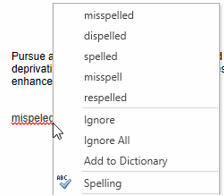
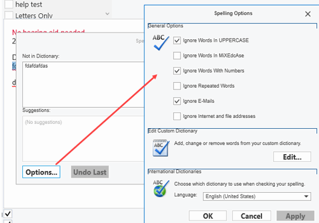

Scripted Notes
Templates used for standardized History link Diagnosis, Recommendation, Chart and Office notes. Scripted Notes can also be used in patient Communications and Telehealth.
Scripted Notes Hierarchy
The Scripted Notes setup tree consists of 3 levels:

- Note Type - Note Types correspond to the Note fields (or “boxes”) that are found throughout TIMS. Currently, Scripted Notes (and the Notes Editor) are only available in the History Link. This means that the only Note Types currently available are Chart, Diagnosis, Recommendation, Communication, Office, and SLP Progress, Diagnosis, Recommendation and Goals. Note types are essentially the top level of the Scripted Notes hierarchy, and cannot be edited by users.

- Category - Categories are the second level of the Scripted Notes hierarchy, and can only be assigned to one Note Type. You can create duplicate Category names, as long as the duplicate categories are assigned to different Note Types. Categories can be created, edited, and deleted via the Category Maintenance button
 located in the top-left corner of the Scripted Notes Setup screen.
located in the top-left corner of the Scripted Notes Setup screen.
 Note: when you first select an existing individual Scripted Note, this button is also lit up and accessible, however, it will be disabled upon any change to the currently selected Scripted Note. The button is also disabled when you create a new Scripted Note. Click here for Category Maintenance instructions.
Note: when you first select an existing individual Scripted Note, this button is also lit up and accessible, however, it will be disabled upon any change to the currently selected Scripted Note. The button is also disabled when you create a new Scripted Note. Click here for Category Maintenance instructions.
- Scripted Note - Scripted notes are the bottom level of the hierarchy, and can only be assigned to one Category. Each Scripted Note can be assigned to any number of users. To add a new Scripted Note, first highlight the desired Note type then Category on the tree as described above, then click the Add New icon
 . The Scripted Note Setup screen will appear on the right.
. The Scripted Note Setup screen will appear on the right.

- Type a Name for the note - duplicate names are allowed, as long as those duplicates are located under different Note Types.
- The Category will default to the one highlighted when the Add New button was clicked. If desired it can be changed to another category in the same Note Type only. Duplicate category names are valid as long as those duplicates are located under different Note Types.
Note: You can move the entire category from one Note Type to another by reassigning the Note Type of the Scripted Note’s category via the Category Maintenance button.
- Type will default to the note Type previously selected. This cannot be changed. If the type is incorrect, abandon your changes and start again with the correct type.
- Select one or more User Group Name to be associated with the note. Only active users will be displayed. Click the Select All box to quickly select all user groups, if applicable.
- Check Insert Date at Beginning to insert today’s date at the beginning of each Scripted Note.
- Check Insert Initials at End to insert the logged in User’s initials at the end of each Scripted Note.
- Type the text of the note in the Notes field - this is required, a blank note cannot be saved. You can type directly in the box for a plain text note. If a more formatted note is desired, right-click on the text box and select Open Editor from the menu.
Note: Formatting is not available for the category Communication. Those notes will be saved as plain text only.

- The Note Designer will popup.

Type your text and format as desired using the full featured editor. Click on the Insert tab to insert images, tables, and text boxes directly. You can also copy and paste text and images from another application. See Notes Designer for more information, and Speech Recognition instructions.
- Spell Checker is enabled by default.

Right-click on the misspelled word to correct, ignore or add to custom dictionary. Spell Check dictionaries are custom to each user. Select Spelling, then Options to customize the dictionary.

- Bookmarks can also be added to Scripted Notes, to insert pre-filled data such as Patient Name and information, Provider Name, Hearing Aid information, Insurance, etc. Right-click in the text box where you wish to insert the bookmark. From the menu choose Bookmarks, then the Category, then the desired bookmark.

- Inactive - Check this box to make the note inactive. Once saved, the note will appear in the Inactive Tree node in exactly the same place/hierarchy as it was found when Active.
- When all information has been added/edited, click the Save button
 on the toolbar.
on the toolbar.
Category Maintenance

- The list on the Left-hand side of the window represents all available Categories for all Note Types. This list is organized alphabetically. Highlight the Category and click the Edit button to make changes to the Name and/or Note Type. Click the New button to add a new Category.
- The name of Categories can be duplicated, as long as no two duplicates are associated with the same Note Type. Available Note Types are: Chart, Diagnosis, Recommendation, Communication, Office, SLP Progress Notes, SLP Diagnosis, SLP Recommendation, and SLP Goals
- Every Category (with the exception of “Unassigned Notes”, please see below) can be deleted. However, a Category cannot be deleted if Scripted Notes are currently assigned to the Category.
Every database will have an “Unassigned Notes” category (assigned to the “Chart” Note Type) and all legacy Scripted Notes will initially be assigned to this category when a customer’s database is upgraded to SP5 and above. While this category can be reassigned to a different Note Type, it can never be deleted. The newly upgraded practices will need to move all notes from this category into the Categories that they create if they desire to completely hide this category from the Scripted Note context menu as it is implemented elsewhere in the application.